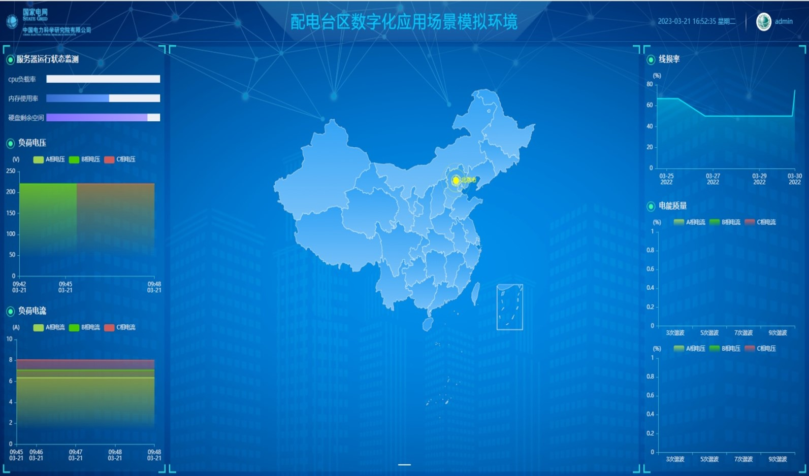
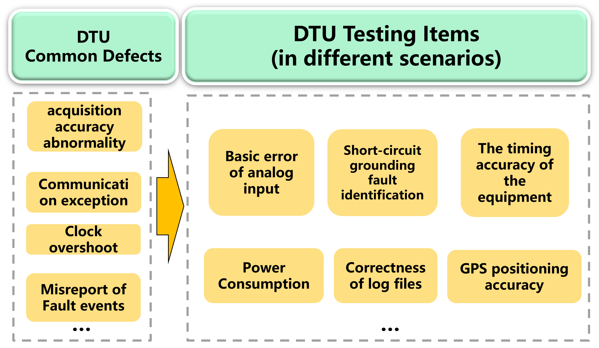
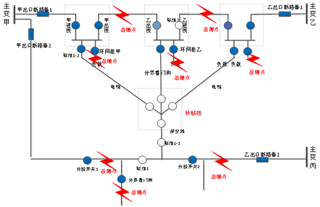
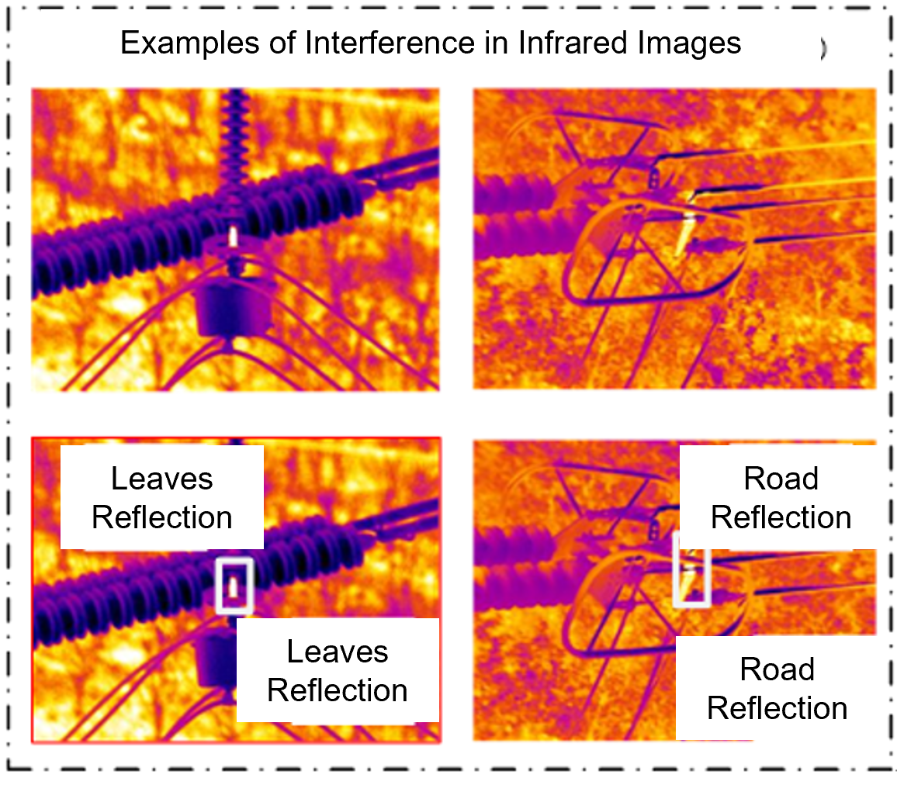
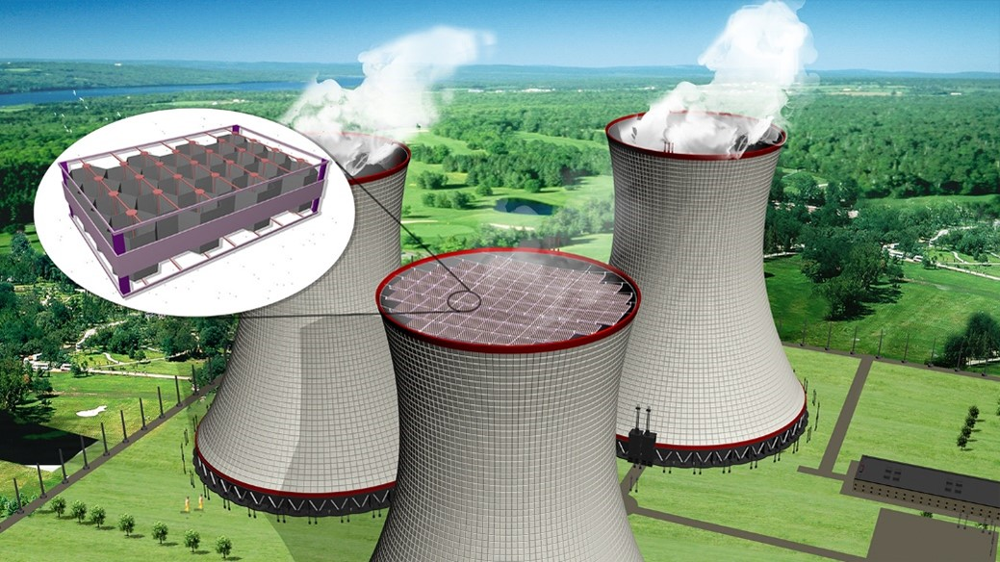

Feiyan Zhou 周菲嫣Senior Research EngineerIntelligent Power Distribution Center China Electric Power Research Institute Email: zhoufeiyn AT gmail DOT com
|
|
Biography
I am a MSCS student at Northeastern University(2025.1-now). Previously, I was a senior research engineer (2020-2024) in China Electric Power Research Institute(CEPRI) and I gained my master and bachelor degree in Xi'an Jiao Tong Universith.
I obtained my bachelor and master degree from Electrical Engineering Department, Xi'an Jiaotong University.
Projects

Constructing a small smart power distribution substation dynamic simulation system，combining an authentic physical frame with simulated
digital network by employing topology recognition and plug-and-play self-registration methods. The entire system can be monitored
and maintained automatically by one single diagram from a cloud-based platform.

Based on transient high-power sources and integrated RLC devices, this platform constructed nearly a hundred standardized testing cases, including test scenarios such as communication failure and data
acquisition，realizing the dynamic simulation of real power distribution main stations, transmission lines, electrical
loads, interference factors, and measuring devices.
3 industry-level awards (Top-2 level award in China)

As a core component of the distribution automation system, feeder automation(FA) plays a crucial role in quickly
isolating faults and restoring power supply to non-faulty areas, thereby enhancing the reliability of power supply.

This project proposes a three-stage cascaded DL detection method: cropping component image patch from whole image, segmenting
component region in component image patch and locating overheating defect in component region, which removes the
interference background step by step and finally realizes the heating diagnosis of insulator and drainage plate
in the transmission line.
3rd Price in 6th China State Grid Corporation’s Youth Innovation and Creativity Competition

Designed an ultra-light plasma water collection electrode by combining the advantage of air plasma ion wind generation and
conductive properties of the adhered water film, which can reduce the comprehensive water consumption rate of thermal
power plants by more than 10%.
1st Price in National University Student Social Practice and Science Contest on Energy Saving & Emission
Reduction in 2016 (National level award, top 0.05% of 2839 projects from 300 universities in China)
Publications (show selected / show all)
Honors
- 1st Price, China Electric Power Enterprise Federation’s Technical Innovation Award, 2023
- 1st Price, China Electric Power Research Institute’s Science and Technology Progress Award, 2022
- 1st Price, 2nd China Electric Power Research Institute’s Youth Innovation and Creativity Competition, 2021
- 3st Price, 6th China State Grid Corporation’s Youth Innovation and Creativity Competition, 2021
- 1st Price, 9th National University Student Contest on Energy Saving & Emission Reduction, 2016
- Postgraduate Academic Scholarship, 2017 - 2020
- Siyuan Electrical Engineering Scholarship, 2016
- Merit Student, 2016
- Siyuan scholarship, 2014, 2015
Academic Service
- Member of China Innovation Alliance for Power Distribution and Internet of Things
- Invited Speaker in China Power Distribution Digital Technology Conference
| © Feiyan Zhou | Last update: April 2024 |